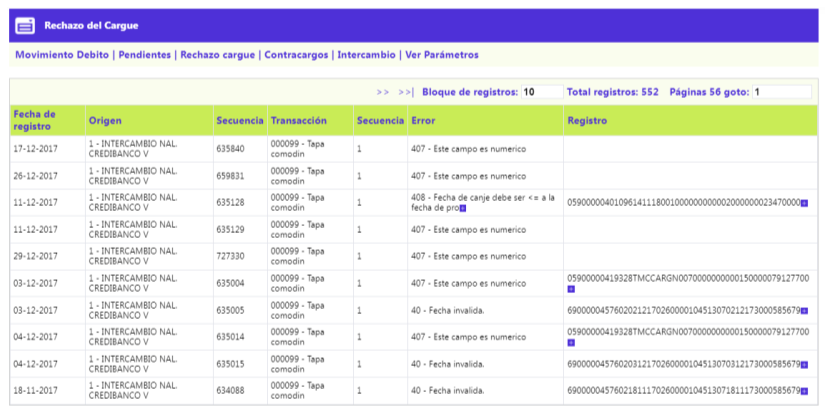

Rechazo del Cargue - Consulta Movimientos
Mediante esta opción se posibilita la consulta de los registros de transacciones que no fueron leídos del archivo que contenía el movimiento dentro del que viajaban dichos registros. El formulario cuenta en la parte superior con el botón Ver Parámetros para regresar al formulario inicial.

Fecha de Registro |
Campo se salida que muestra la fecha en formato DD-MM-YYYY, en la cual fue rechazado el registro. |
Origen |
Campo de salida que ilustra el código y nombre del origen por el que se cargo el registro. |
Secuencia |
Campo de salida que ilustra el número con el que se identifica el registro rechazado. |
Transacción |
Campo de salida que ilustra el código y nombre de la transacción origen, asignada por el sistema a las transacciones rechazadas. |
Secuencia |
Campo de salida que ilustra el número con el que se identifica el cargue del archivo en donde venia la transacción rechazada. ingresado por un mismo origen para una misma fecha de proceso. |
Error |
Muestra el código de error asociado al registro rechazado. |
|
Registro |
Muestra la cadena de caracteres que conforman el registro físico no leído. |
Movimiento debito | Pendientes | Contracargos | Intercambio | Ver Parámetros